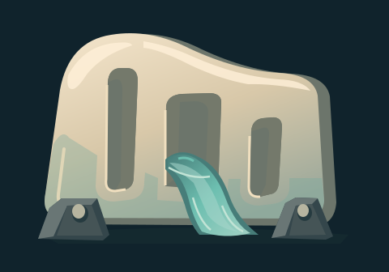
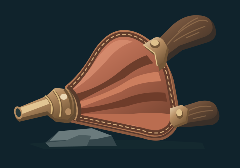
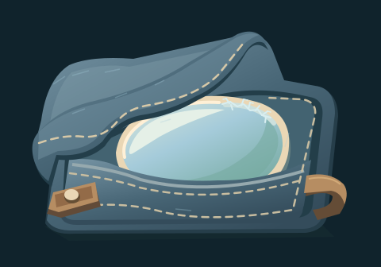
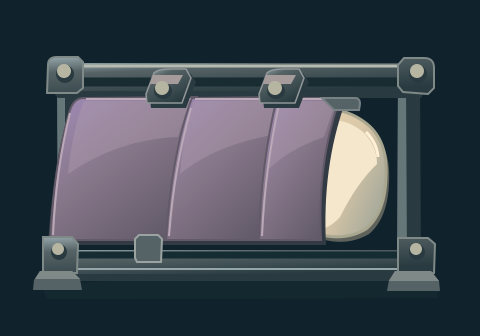

Six optional future material-handling concepts informed by five patron affinities and
three-way audience choices. These are proposed source fiction with no established ritual,
runtime slot, rule or selection. Enlarged illustrations are followed by native 160×112 and
compact 80×56 study views.
Aster grounding plate
Physical storm-affinity interaction study; no accepted patron ritual, weapon, boon or
effect timing.
candidate · Slotted bronze plate, low slate supports and a connected
braided conductor read as distinct load-bearing pieces at 80px; no electrical behavior is
asserted.
Neris weir panel

Tide-affinity water-handling source concept distinct from existing wave marks and earlier
bowls/coffers.
candidate-with-caveat · Thick ceramic panel and unequal slots remain
legible at compact size. The aqua ribbon is a symbolic cutaway current, not convincing
continuous fluid flow through a complete weir.
Vesta ritual bellows

Portable cinder-affinity handling tool, not the earlier bellows-maul weapon or a new
gameplay interaction.
candidate · Leather fold hierarchy, fitted nozzle, wood handles and lower
support remain distinct at 80px; useful portable handling silhouette.
Isen cooling wrap

Winter-affinity handling concept; distinct from resting cradle/blanket furniture and
current rune marks.
candidate-with-caveat · Folded fabric, sewn pocket and fitted oval insert
read clearly. The broad cyan highlight makes the ceramic insert resemble a glass lens;
final material selection needs review.
Nyra witness shutter

Veil-affinity reveal/inspection device concept, not an established story scene or new
reveal mechanic.
candidate · Overlapping plum panels, rail stops and pale inner wafer
remain clear at compact size; the frame presents a coherent sliding inspection device.
Audience choice rack
Physical composition reference for three-way audience choice; no replacement for existing
choice UI, selection rules or new lore.
candidate · Three unequal thick unmarked strips sit visibly in a low
slotted stone support; their compact silhouettes stay distinct without adding inscriptions
or accepted selection rules.